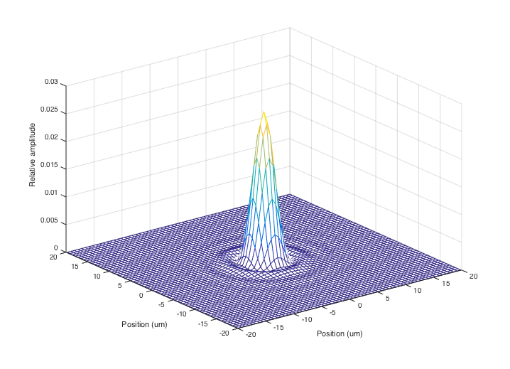
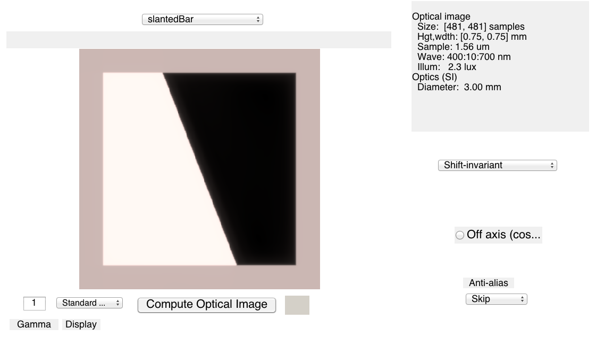
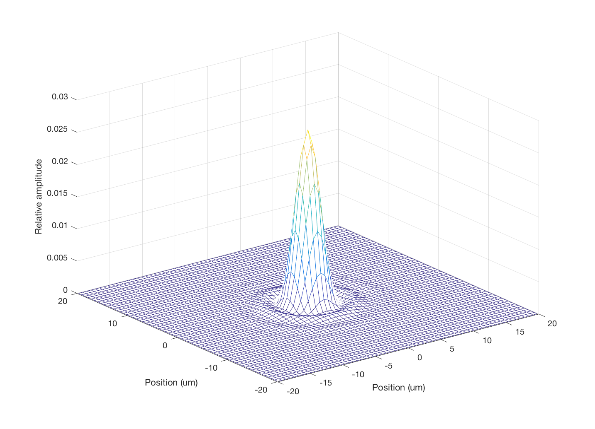
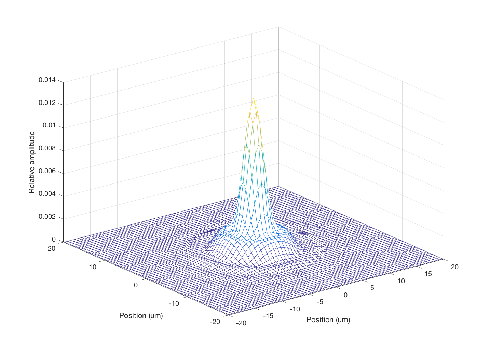
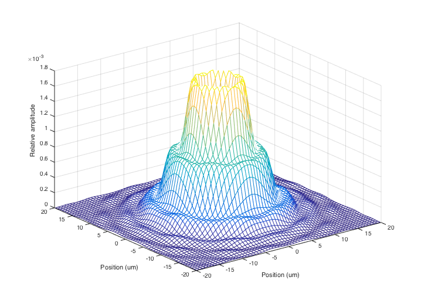
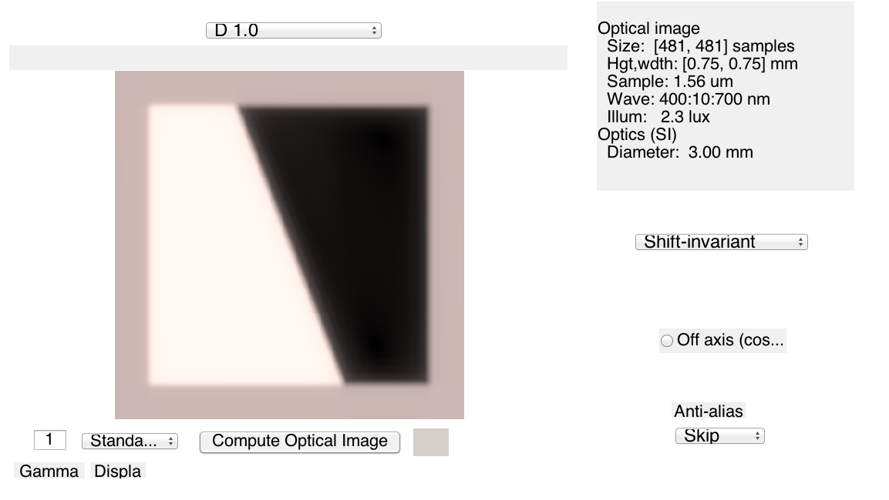
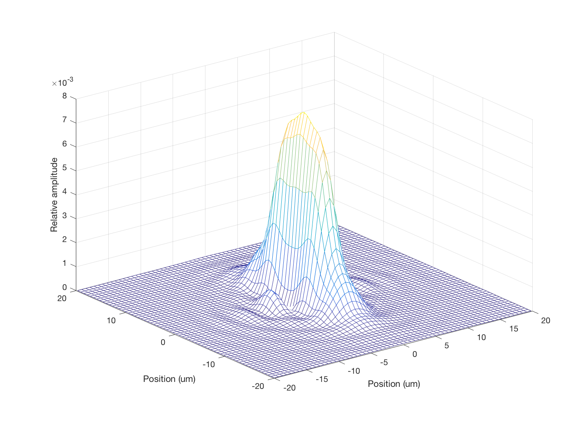
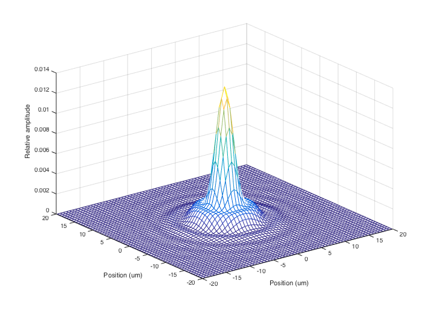
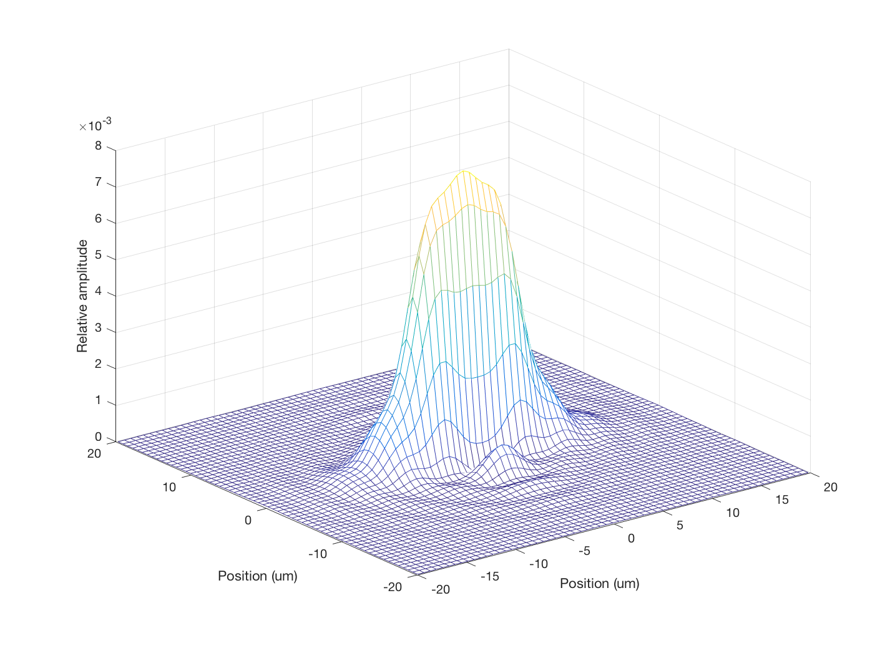
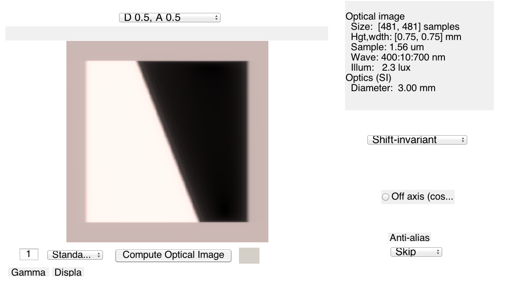

Contents
function t_wvfZernickeSet
Initialize
ieInit;
Create a scene
scene = sceneCreate('slanted bar');
Create wavefront object and push it into an optical image object
wvf = wvfCreate;
wvf = wvfComputePSF(wvf);
wvfPlot(wvf,'2d psf space','um',550,20);
oi = wvf2oi(wvf);

Make an ISET optical image
oi = oiCompute(oi,scene);
vcAddObject(oi); oiWindow;

Change the defocus coefficient
wvf = wvfCreate;
D = [0,0.5,1];
for ii=1:length(D)
wvf = wvfSet(wvf,'zcoeffs',D(ii),{'defocus'});
wvf = wvfComputePSF(wvf);
wvfPlot(wvf,'2d psf space','um',550,20);
oi = wvf2oi(wvf);
oi = oiCompute(oi,scene);
oi = oiSet(oi,'name',sprintf('D %.1f',D(ii)));
vcAddObject(oi); oiWindow;
end
   
Now astigmatism with a little defocus
wvf = wvfCreate;
A = [-0.5, 0, 0.5];
for ii=1:length(A)
wvf = wvfSet(wvf,'zcoeffs',[0.5, A(ii)],{'defocus','vertical_astigmatism'});
wvf = wvfComputePSF(wvf);
wvfPlot(wvf,'2d psf space','um',550,20);
oi = wvf2oi(wvf);
oi = oiCompute(oi,scene);
oi = oiSet(oi,'name',sprintf('D %.1f, A %.1f',0.5,A(ii)));
vcAddObject(oi); oiWindow;
end
   